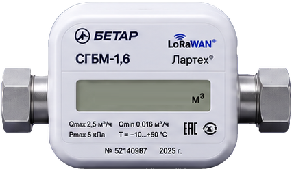
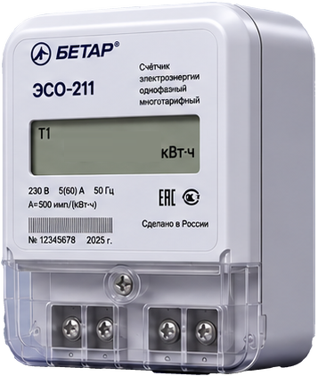

СГБМ
Струйно-акустический. Вертикальный или горизонтальный монтаж. Дистанционный съём — опция.
Характеристики производителя

Струйно-акустический. Вертикальный или горизонтальный монтаж. Дистанционный съём — опция.
U-образный тройник под присоединение мембранного счётчика. Температурная коррекция. Межповерочный интервал 12 лет.
Проводной RS-485. Тройник с одной или двумя накидными гайками. Межповерочный интервал 12 лет.
Радиоканал ВЕГА по LoRaWAN. Передаёт показания и аварийные сообщения.
Радиоканал Лартех по LoRaWAN. Передаёт показания и аварийные сообщения.
Фланцевый тройник под присоединение ротационного счётчика. Температурная коррекция. Межповерочный интервал 12 лет.
Струйно-акустический. Вертикальный или горизонтальный монтаж. Импульсный выход доступен как опция.

СХВ для холодной воды 5–40 °C, СГВ для холодной и горячей 5–90 °C. Давление до 1,0 МПа. Доступен импульсный выход.
Малогабаритные. СХВМ 5–40 °C, СГВМ 5–90 °C. Давление до 1,0 МПа.
Для Ду 15 монтажная длина 80 или 110 мм. Класс C при горизонтальном монтаже счётным устройством вверх. До 1,0 МПа.
Электронный вычислитель. RS-485 или импульсный выход. Класс C при горизонтальном монтаже счётным устройством вверх. До 1,0 МПа.
LoRaWAN КАРАТ, оптопорт, R100. Архив на 24 часа, 365 суток и 120 месяцев.
RS-485 или импульсный выход. Кабель RS-485 стандартно 1 м, длина и разъём RJ-45 доступны по запросу.
LoRaWAN ВЕГА. Передача показаний и аварийных сообщений. На странице разграничены поколения приборов.
NB-IoT ВЕГА. Передача показаний и аварийных сообщений через сеть сотового оператора.
Многоструйный крыльчатый. 5–90 °C, до 1,0 МПа. Класс B, горизонтальный монтаж.
Турбинный. 5–90 °C, до 1,0 МПа. Класс B, горизонтальный монтаж.

Активная энергия, однофазная двухпроводная сеть 50 Гц. Многотарифный учёт и проводной RS-485.
230 В, 50 Гц, 4 тарифа. Ток 5/60 или 10/100 А. Сменные модули связи, включая RS-485, GSM, LoRa и Wi-Fi.